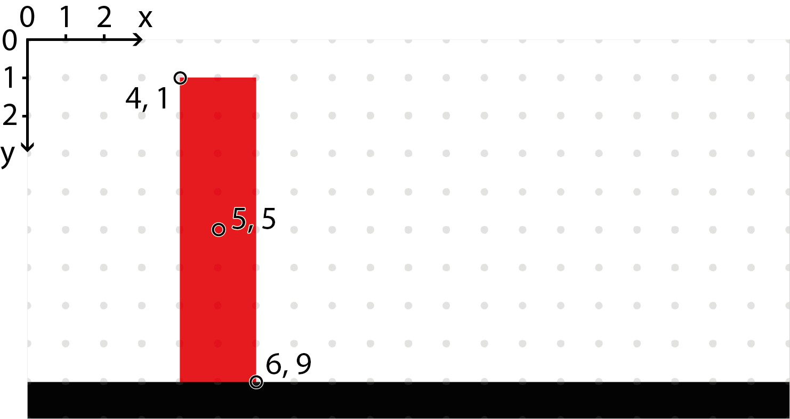

UI
The UI section controls how the exercise appears to the user. It allows you to define a custom interface, provide instructions, show hints or graphics, and handle interactions through a canvas.
How to use the canvas
Depending on what skeleton you are using, the way you add your graphics to the canvas differs. The templates for either skeleton will include an example of using the canvas.
If you use BasicChallenge (or no skeleton) you will want to manually add the elements to the canvas, like so:
Manually adding elements to canvas
1 2 | |
If you use StageChallenge or GameChallenge you will want to return the element in the setup_view method:
Implicitly adding element to canvas
1 2 3 | |
Note
You specify neither parent nor position in setup_view, this is done for you.
Either way you will get a canvas containing only a green square.
Overview
The UI library is object oriented, meaning that the graphical elements are represented by Python objects. You create a new element by creating a new object and you can modify the elements by modifying the objects. An element will not show up on the canvas unless the object has the canvas as a parent (or grandparent, or great grandparent, and so on).
A child element will inherit some of the attributes from it's parent.
They will be positioned relative to the parent, scaled according to the parent, and opacity of the parent is applied.
A child with opacity of 0.5 and with a parent with opacity of 0.5 will in effect have an opacity of 0.25.
When creating an element object, you can (and sometimes must) include a number of attributes.
You can use any of the names listed here, e.g. width or w or size_x.
The same names can be used to get or modify the attributes later on.
Accessing attributes
1 2 3 | |
All elements can have a parent, and some can have children.
If an element switches parent it will be removed from the previous parent's list of children.
You can either use the parent attribute or the .add_child(child)/.remove_child(child) methods to update the hierarchy.
But remember that for an element to show up in the canvas it needs to have it as an ancestor.
The following section and subsections will detail the different elements available in the UI library, grouped by similarities. Many elements have common attributes, which are detailed in their own section to make things cleaner.
Elements
All these elements can be imported from the lib.ui package, along with any of the enums and constants listed here.
Importing and using an element
1 2 3 | |
Remember to add the element to the import list, or you will get an error.
All elements extend either the BaseElement or ContainerElement base class which provides the common and container attributes and methods.
Shapes
These elements are used to make geometric shapes, either filled or outlines.
Use Polygon to make additional shapes such as triangles and hexagons.
For more complex shapes, consider using images instead.
Rectangle
Used to make squares, rectangles and rounded rectangles.
General attributes/methods:
common,
container,
shape,
action,
click,
drag,
keyboard
corner_radius-float | NoneS- Add rounded corners to the rectangle
Creating three Rectangle objects
1 2 3 4 5 6 7 8 9 10 11 12 13 14 | |
Circle
Used to make circles.
General attributes/methods:
common,
container,
shape,
action,
click,
drag,
keyboard
radius/r-floatS- The radius of the circle, use instead of
width/height min_radius/min_r-float- The minimum radius for this element, does not affect the current radius
max_radius/max_r-float- The maximum radius for this element, does not affect the current radius
fixed_radius-bool- Prevents automatic resizing of the circle
Creating three Circle objects
1 2 3 4 5 6 7 8 9 10 11 | |
Polygon
Used to make any other straight edge shapes. Consider using images if you need a large number of points.
General attributes/methods:
common,
container,
shape,
action,
click,
drag,
keyboard
points-list[tuple[float, float]]R- A list of points to use to draw the polygon, required and positional
bounds-tuple[tuple[float, float], tuple[float, float]]S- The bounds of the polygon used to determine size and pivot, calculated if omitted
Creating three Polygon objects
1 2 3 4 5 6 7 8 9 10 | |
ComplexShape
Used to make a shape with straight or Bézier curves. Consider using images if you need very complex shapes or a large number of points.
General attributes/methods:
common,
container,
shape,
action,
click,
drag,
keyboard
segments-list[list[tuple[float, float]]]R- A list of segments (list of points) to use to draw the shape, required and positional
- Each segment must consist of one to three points (first must be one point):
-
- Single point means a straight line to that point
-
- Two points is a quadratic Bézier curve with a control point (first) and an end point (second)
-
- Three points is a cubic Bézier curve with two control points and an end point (last)
bounds-tuple[tuple[float, float], tuple[float, float]]S- The bounds of the shape used to determine size and pivot, calculated if omitted
closed-boolS- Whether the shape should be closed or not
Creating a ComplexShape
1 2 3 | |
Text
These elements can be used to display text.
Text
Simple text element. The size is based on the text string and font size.
General attributes/methods:
common,
action,
click,
drag,
keyboard
text-str- The text to display, required and positional
color-str- The text color
font_size-float- The text font size
align_x-"left" | "right" | "center"- The horizontal text align
Creating a Text
1 2 3 | |
DynamicText
Alternative to Text where the text is adjusted to fit within the size rather than the other way around.
General attributes/methods:
common,
action,
click,
drag,
keyboard,
fit to content
text-str- The text to display, required and positional
color-str- The text color
font_size-float- The text font size
align_x-"left" | "right" | "center"- The horizontal text align
align_y-"top" | "bottom" | "center"- The vertical text align
Creating a DynamicText
1 2 3 | |
HtmlArea
Used to add a block of text that can be formatted using HTML code. If the content is wider or taller than the element size, a scrollbar will appear. It is possible to include images and CSS, using normal HTML syntax.
General attributes/methods:
common,
scroll
html-str- The HTML text to display, required and positional
font_size-float- The text font size
align_x-"left" | "right" | "center"- The horizontal text align
disable_scroll-bool- Disables scroll and all ScrollArea features so it will limit the HtmlArea to its width and height.
disable_auto_font_scale-bool- Disables auto font scale and the text font size will be applied.
Creating an HtmlArea
1 2 3 | |
Graphics
These elements can be used to display images and animations.
Image
Displays a static image.
General attributes/methods:
common,
action,
click,
drag,
keyboard
image-strS- The name of the image to show
color-str- A color to use for tinting the image
Creating three Image objects
1 2 3 4 5 6 7 8 9 10 | |
Note
There are many images provided by the framework that can be accessed simply by using their names as the image string.
You can find them all in Built in images.
Sprite
Displays an animated image. See Create Sprite Sheet to learn about creating a sprite sheet.
General attributes/methods:
common,
action,
click,
drag,
keyboard
image-strS- The name of the sprite sheet to show
color-str- A color to use for tinting the image
animation/anim-strS- The name of the animation to play, use
"default"for the default animation start_frame/start-int | NoneS- An animation frame to start on
end_frame/end-int | NoneS- An animation frame to end on
Creating three Sprite objects
1 2 3 | |
Containers
These elements can be used to fit more content in the canvas.
Creating a container
1 | |
ScrollArea
Use when you want some content to be scrollable (vertical and/or horizontal).
General attributes/methods:
common,
scroll
Creating a ScrollArea
1 2 | |
A scroll area is a container that can hold other elements, allowing the user to scroll through them if they don't all fit in the visible region. This is useful when you want to show many elements in a limited space.
General attributes/methods:
common,
scroll
Creating a ScrollArea
1 2 | |
TabArea
Use when you want to split up some content into tabs.
Consider putting tab content into ScrollAreas for even more space.
General attributes/methods:
common,
style
tabs-dict[str, BaseElement]- The tab names and content to include, required and positional, constructor only
font_size-float- The font size to use for the tab headers
Creating a TabArea
1 2 3 4 5 | |
Layouts
These elements can be used to simplify positioning of elements.
They handle addition, removal and resizing of elements as well.
Also, these elements cascade resizing down to any children.
Other elements like Rectangle are resized if the parent is a Layout element, but a Rectangle doesn't cascade resizing to its children.
Horizontal
Used to position elements horizontally.
General attributes/methods:
common,
layout
All positional arguments are added as children.
proportions-list[float]- Proportions of size to give to each element, 0 means an even proportion of the remaining space
Creating a Horizontal
1 | |
When using proportions, the values should always add up to 1. In the example below, the Horizontal layout contains two objects, and only one proportion is explicitly defined: 0.1. This means the first object takes up 10% of the width, and the second automatically gets the remaining 90% (i.e., 1 - 0.1 = 0.9).
When there are exactly two objects, it's enough to specify the proportion for one — the other will be calculated automatically.
Creating a Horizontal Proportions
1 2 3 4 5 | |
Vertical
Used to position elements vertically.
General attributes/methods:
common,
layout
All positional arguments are added as children.
proportions-list[float]- Proportions of size to give to each element, 0 means an even proportion of the remaining space
Creating a Vertical
1 | |

When using proportions, the values in the list should always add up to 1. In the example below, the Vertical layout contains five objects. The sizes of the first four are set to 0.05, 0.1, 0.3, and 0.3, which means the fifth object automatically takes the remaining space: 0.25.
When there are multiple objects, you can specify proportions for all but the last one — its size will be calculated automatically to make the total equal to 1.
Creating a Vectical Proportions
1 2 3 4 5 6 7 8 9 10 11 12 13 14 15 16 17 | |
Grid
Used to position elements in a grid.
General attributes/methods:
common,
layout
All positional arguments are added as children.
rows-int- Number of rows in the grid, calculated if not set
columns-int- Number of columns in the grid, calculated if not set
transpose-bool- Whether to place columns first, rather than rows first
alignments-tuple[list["left" | "right" | "center" | None], list["top" | "bottom" | "center" | None]- Alignments for each column or row and column,
Nonemeans use thealign_x/align_yvalue proportions-tuple[list[float], list[float]- Proportions of size to give to each row and column,
0means an even proportion of the remaining space
Controls
These elements are interactive UI elements mostly useful in interact mode.
Button
Used to create a button.
General attributes/methods:
common,
style,
action,
click,
fit to content
text-str- The text on the button, required and positional
font_size-float- The font size of the button text
align_x-"left" | "right" | "center"- The horizontal text align
align_y-"top" | "bottom" | "center"- The vertical text align
padding-float- Padding around the text within the button
border_size-float | None- The thickness of the border around the button
corner_radius-float | None- The radius of the corners of the button, set to
Nonefor a square button overlay-bool- Whether to use the overlay styling for this button or not
primary-bool- Whether to use the primary styling for this button or not
enabled-boolS- If set to
Falsewill both disable click callbacks and use the disabled styling
Creating a Button
1 2 3 4 | |
Checkbox
Use to create a checkbox.
General attributes/methods:
common,
style,
action,
click
checked-boolS- Whether the checkbox is checked or not
intermediate-boolS- Whether the checkbox is in an intermediate state or not
intermediate_value-bool- The checked value to use when the checkbox is in an intermediate state
text-str | None- The label next to the checkbox
font_size-float- The font size of the checkbox label
solid-boolS- Whether to use the solid icons for this checkbox or not
enabled-boolS- If set to
Falsewill both disable click callbacks and use the disabled styling on_change-(CheckboxEventData) -> NoneE- Called whenever the checkbox changes state
Creating a Checkbox
1 2 3 4 | |
Panels
These elements can be used to visually separate a set of other elements.
Panel
A simple panel. Can have a title and a title image. Can also have content with will be resized based on the panel size.
General attributes/methods:
common,
style
content-BaseElementR- Content to but inside the panel, constructor only
title-strR- A title for the panel, constructor only
title_image-str- An image to put in the top-right corner of the panel, only visible if a title is set
font_size-float- The font size of the title text
corner_radius-float | None- The radius of the corners of the panel, set to
Nonefor a square panel overlay-bool- Whether to use the overlay styling for this panel or not
spacing-float- The distance between the title and content
padding-float- The distance between panel content/title and the outer edge
Toolbar
A panel with three distinct areas: left, right, and center. Children within each area are arranged horizontally.
General attributes/methods:
common,
style
corner_radius-float | None- The radius of the corners of the panel, set to
Nonefor a square panel overlay-bool- Whether to use the overlay styling for this panel or not
spacing-float- The distance between children within each area
padding-float- The distance between toolbar content and the outer edge
Creating a Toolbar
1 2 3 4 5 6 7 8 | |
Popup
A popup panel with a message and ability to add buttons. The popup needs to be activated by toggling. Clicking any of the popup buttons will close the popup. Only works properly in interact mode.
General attributes/methods:
common,
style
text-strR- The message to display, required and positional, constructor only
buttons-list[Button]R- The buttons to include, required and positional, constructor only
corner_radius-float | None- The radius of the corners of the panel, set to
Nonefor a square panel overlay-bool- Whether to use the overlay styling for this panel or not
spacing-float- The distance between buttons
padding-float- The distance between popup content and the outer edge
Creating a Popup
1 2 3 4 5 6 | |
Specialized
These elements are not as generally useful as the others, but are very useful for specific tasks.
Board
Use to create a chess-like game board of square grids. If you need something more dynamic or want more features, take a look at World.
You can place elements on the board by coordinates, e.g. board[0, 2] = Circle(color="red").
The elements will automatically be positioned and resized to match the specified square.
There can only be one element at each coordinate, which can be fetch like so: board[0, 2].
General attributes/methods:
common,
style
rows-intR- How many rows the board should have
columns-intR- How many columns the board should have
line_size-float- The thickness of the grid lines
edge_size-float- The thickness of the edge outside the grid
font_size-float- The font size of the square coordinate labels
row_labels-list[str]R- The labels to use for the rows, you can use the constants
LOWERCASE_LABELS,UPPERCASE_LABELS, andNUMBER_LABELS column_labels-list[str]R- The labels to use for the columns, you can use the constants
LOWERCASE_LABELS,UPPERCASE_LABELS, andNUMBER_LABELS invert_rows-boolR- Will draw the rows bottom to top rather than top to bottom
invert_columns-boolR- Will draw the columns right to left rather than left to right
corner_radius-float | None- The radius of the corners of the board, set to
Nonefor a square panel overlay-bool- Whether to use the overlay styling for this board or not
Creating a Board
1 2 3 4 5 6 7 | |
Stage
This element is primarily used by the StageChallenge and GameChallenge skeletons.
It is recommended to use those rather than using this element directly.
General attributes/methods:
common,
style
content-BaseElementR- The main content to put in the middle of the stage, required and positional, constructor only
info_panel-BaseElement | NoneR- Optional content to put on the left-hand side, constructor only
tabs-dict[str, BaseElement]R- Tabs to show on the right-hand side, constructor only
show_toolbar-boolR- Whether to show the toolbar or not, constructor only
center_buttons-list[Button]R- Buttons to put in the center of the toolbar, constructor only
right_buttons-list[Button]R- Buttons to put to the right of the toolbar, constructor only
info_prompt-str- Text to show in the toolbar on the lower left
spacing-float- Distance between the areas of the stage
toolbar_height-float- The height of the toolbar
SpeechBubble
Use to create a speech bubble. Mainly used by the .say(...) command for character actors in World.
General attributes/methods:
common,
fit to content
text-strS- The text within the speech bubble, required and positional
font_size-floatS- The desired text font size
settings-SpeechBubbleSettingsS- Specifies the shape of the speech bubble:
-
radius- The radius of the speech-bubble "corners"
-
tail_inset- How far in the tail should be positioned (x-offset)
-
tail_width- How thick the tail should be
-
tail_height- How tall the tail should be
-
tail_point_offset- How the tail tip should be positioned (x-offset)
-
tail_position- Where to put the tail, one of "bottom_left", "bottom_right", "top_left", or "top_right"
-
shadow_height- How high up the lower shading of the bubble should go
-
edge_size- How thick the edge around the bubble should be
theme-SpeechBubbleTheme- Specifies the color scheme of the speech bubble:
-
text_color- The color of the text
-
bubble_color- The background color of the bubble
-
shadow_color- The shading color of the bubble
-
edge_color- The color of the bubble edge
auto_fit-bool- Whether to automatically resize the bubble to fit the text or not, can use
.fit_to_content()manually auto_anchor-bool- Whether to automatically anchor the element position to the tail tip or not, can use
.anchor_at_tail()manually
Table
Extends the Grid element with grid lines.
It is recommended to use a data manager.
Almost identical to Grid, but with the following additional attributes:
style-Style- See styling
line_size-float | None- The thickness of the grid lines, use
Noneto remove the lines
Attributes / Methods
This section lists the attributes and methods common among several elements, check each element above for which apply.
A few attributes are marked with a letter, they have the following meanings:
- C - coordinate
- This attribute is a coordinate property, see Coordinates
- E - event callback
- This attribute is an event callback, see Events
- R - readonly
- This attribute can not be updated (or animated)
- S - static
- This attribute can not be animated, see Animation
Common
parent-Container | NoneS- The parent of the element
size-tuple[float, float]C- The size (width and height) of the element
- Some elements calculate these values based on other attributes, in which case the size is read-only
.request_size(size)- Ask the element to adjust its size to match the given size, taking into account min and max size and other restrictions
.request_size(size, time)- Same as above but using an animation time, see Animation
size_x/width/w-float- The width of the element, component of
size .request_width(width)- Ask the element to adjust its width to match the given width, taking into account min and max width and other restrictions
.request_width(width, time)- Same as above but using an animation time, see Animation
size_y/height/h-float- The height of the element, component of
size .request_height(height)- Ask the element to adjust its height to match the given height, taking into account min and max height and other restrictions
.request_height(height, time)- Same as above but using an animation time, see Animation
min_size-tuple[float, float]C- The minimum size of the element, does not apply automatically and does not prevent setting the size manually
min_size_x/min_width/min_w-float- The minimum width of the element, component of
min_size min_size_y/min_height/min_h-float- The minimum height of the element, component of
min_size max_size-tuple[float, float]C- The maximum size of the element, does not apply automatically and does not prevent setting the size manually
max_size_x/max_width/max_w-float- The maximum width of the element, component of
max_size max_size_y/max_height/max_h-float- The maximum height of the element, component of
max_size fixed_width-bool- If set to
Truethen the width will not be changed automatically, can still be changed manually though fixed_height-bool- If set to
Truethen the height will not be changed automatically, can still be changed manually though position/pos-tuple[float, float]C- The position of the element, relative to the
anchor(usually center of the element) position_x/pos_x/x-float- The x-position of the element, component of
position position_y/pos_y/y-float- The y-position of the element, component of
position offset-tuple[float, float]C- An offset to apply to the element position, useful if the position is controlled by another element
offset_x-float- The x-offset of the element, component of
offset offset_y-float- The y-offset of the element, component of
offset anchor-tuple[float, float]C- The anchor point of the element,
0means center,-1means left/top and1means right/bottom. anchor_x-float- The x-anchor of the element, component of
anchor anchor_y-float- The y-anchor of the element, component of
anchor z_index/z-float- The visual sorting of the element or "distance from the screen", an element with higher z-index will be drawn above others
- Children will have the same z-index as their parents from the outside
scale-tuple[float, float]C- Scaling factor for the element, is not considered when estimating the size or position of the element
scale_x-float- The x-scale of the element, component of
scale scale_y-float- The y-scale of the element, component of
scale rotation-float- The rotation of the element in degrees, positive values means clockwise and negative means counter-clockwise
pivot-tuple[float, float]C- The pivot point of the element, which is used as the rotation point
-
Note
pivotdoes not work properly forText,Image, andSprite pivot_x-float- The x-pivot of the element, component of
pivot pivot_y-float- The y-pivot of the element, component of
pivot toggle_group-str | None- The toggle group of the element, see Toggling
toggle_by_default-bool- Whether the element should start out toggled on
opacity-float- The opacity of the element,
1means fully opaque and0means fully transparant on_resize-(ResizeEventData) -> NoneE- Called after the element is given a new size
Container
children-list[BaseElement]R- Elements to add as children if in constructor otherwise a read-only list of current children
.add_child(child)- Add a new child to the element, removing it from any previous parent
.add_children(child_1, child_2, ...)- Add several new children to the element
.remove_child(child)- Removes a child from the element
.remove_children(child_1, child_2, ...)- Removes several children from the element
on_add_child-(ChildEventData) -> NoneE- Called when a (public) child is added to the container
on_remove_child-(ChildEventData) -> NoneE- Called when a (public) child is removed from the container
Shape
color-str- The fill or stroke color of the shape
stroke-float | NoneS- Draw the edge of the shape rather than the area
Action
action_effect-Effect | None- Effect to apply when hovering the element and it is interactable
hover_effect-Effect | None- Effect to apply when hovering the element
Adding three polygons
1 | |
hover_targets-list[BaseElement]- Elements that will be toggled while this element is hovered
Click
on_click-(ClickEventData) -> NoneE- Called when this element is clicked in interact mode
click_targets-list[BaseElement]- Elements that will be toggled when this element is clicked
interact_click_targets-list[BaseElement]- Same as
click_targetsbut only works in interact mode
Drag
draggable-bool | NoneS- Whether the element should be draggable, set to
Nonefor default behaviour on_drop-(DragEventData) -> NoneE- Called when this element is dropped after being dragged
drag_targets-list[BaseElement]- Elements that will be toggled while this element is dragged
drag_effect-Effect | None- Effect to apply when the element is being dragged
drop_zones- Target areas in the exercise UI where draggable elements can be dropped.
drop_zone_effect- Describes the visual or behavioral feedback a drop zone provides when a user drags an item over it. This can include highlighting, cursor changes, or animations to indicate whether a drop is allowed or desirable.
drag_zone- Refers to the source area or elements from which items can be dragged.
drag_zone_effect- Describes the user feedback or restrictions applied during the drag operation. This might include the type of drag allowed (e.g. "move", "copy"), visual cues like shadows or opacity, and constraints on which elements can be dragged.
drop_event- A system or browser event that is triggered when a draggable item is released over a drop zone. This event is captured to determine whether the item was dropped in a valid location and to trigger scoring or feedback logic.
Keyboard
key_list-list[str]S- Keys this element should listen for, see Keys
on_key_up-(KeyboardEventData) -> NoneE- Called when a key is released (if in
key_listor it is empty)
Scroll
widget_color-str- The color of the scroll bars
widget_size-floatS- The size of the scroll bars
follow_bottom-bool- If set to
Truethen the area will continue scrolling automatically if at the bottom
Layout
spacing-float- Distance between elements
align_x-"left" | "right" | "center"- The horizontal element align
align_y-"top" | "bottom" | "center"- The vertical element align
Style
style-Style- The style to apply to this element, see Styling
FitToContent
.fit_to_content()- Ask element to adjust its size based on the content
.fit_to_content(time)- Same as
.fit_to_content()but at the given animation time
Coordinates
The attributes marked with a C is a coordinate attribute.
This means that it has two component attributes for the x and y values.
You can modify either of these three attributes (or any aliases) to change (part) of the coordinate.
The coordinate property has some additional convenience features:
- Vector operations such as addition, subtraction, multiplication and division
- Conversion of scalar values to a pair
Using coordinates
1 2 3 4 5 | |
You can also access the x and y elements of the coordinates as members, e.g. rect.pivot.x, but you can not assign to them, so it is better to always use rect.pivot_x.
Animation
Many attributes are animated when modified, such as gradually turning transparent when setting opacity to 0.
But it is possible to control this in more detail using the animation features of the UI library.
Note
To get animation to work, go to the Graphics tab in Freecode Creator and check "Uses Canvas" and "Has Canvas Animation".
You can specify the values of many attributes with more precise timing using the .time(time) method.
It returns a virtual copy of the element which represents the element at that time.
The time should be a number from 0.0 to 1.0 which corresponds to a fraction of the time step, where 0.0 is at the start, 0.5 is at the middle, and 1.0 is at the end of the time step.
Creating a shaking animation
1 2 3 4 5 6 7 8 9 | |
You might realize that you do not want an attribute to be animated, in which case you can use .instant which is the same as .time(0).
If you want it to happen later in the time step you can first add the old value with a time value, and then the new value with a slightly higher time value e.g. .time(0.499) and then the new value with time(0.5).
This will ensure that the value change occurs immediately without any intermediate values.
Making boxes suddenly transparent
1 2 3 4 5 6 7 8 9 10 11 12 | |
Step animation
It is possible to go to the next time step manually, this can be very useful when making more elaborate animations.
You do this by calling canvas.split_step().
All graphical operations performed after canvas.split_step() will occur in a new step.
Example: Falling rectangle
We want to have a rectangle that tips over and lands on one side. The rectangle should be 2 units wide, 8 units high, and have its pivot offset from the center to its lower right corner. We will also offset it 6 units to the right and 9 units down to make it easier to see. If we do all this it should be placed like in the image below: 
Note
The coordinate (0, 0) is in the upper left corner, x grows to the right, and y grows downwards.
Note
The grey dots show all points that have integer coordinates, i.e. (1, 1), (2, 1), and so on.
Code for defining our rectangle
1 | |
We don't want the rectangle to suddenly hit the ground. To make the fall look somewhat natural we will divide it up like this:
- The rectangle will stand still for one time step
- The rectangle will rotate 45 degrees the first 70% of the second time step
- The rectangle will rotate 45 degrees more during the remaining 30% of the second time step
Code for defining our rectangle's fall
1 2 3 4 5 6 | |
The end result will look like this:
Freecode that implements this animation: Freecode
Note
You need to be logged in to see the freecode
Warning
The freecode uses the old graphics style found in Freecode graphics
Effects
It is possible to apply effects on some attributes while certain conditions are met, such as when an element is hovered over with the mouse.
This is specified using the Effect object and effect attributes, such as hover_effect.
The Effect object has support for the following attributes:
coloropacityrotationscaleorscale_x/scale_y
The specified values will be applied while the condition is met, and reverted once it is not.
Hover effect on a circle
1 | |
Many times you would want an effect only when an element is interactable. For this we have the action_effect attribute.
Making a circle interactable only when clickable
1 | |
Effects of child elements will trigger if the effect of the parent would trigger.
Events
There are several events that can be listened to in order to react to element changes or user input.
The easiest way to do this is to use to on_[event] attributes.
These attributes takes callbacks, which are functions with a single parameter which will be an EventData object.
Look at the example for Button, or the last example of the previous section.
The subsections lists the additional attributes that are available for the different kinds of EventData objects.
ResizeEventData
source-BaseElement- The source element of the event
time-float | None- The time of the change, see Animation
dimensions/dims-Dimensions- The dimensions affected by the change
ChildEventData
source-BaseElement- The source element of the event
child-BaseElement- The child in question
ClickEventData
source-BaseElement- The source element of the event
DragEventData
source-BaseElement- The source element of the event
position/pos-tuple[float, float]- The drop position
position_x/pos_x/x-float- The x-component of the drop position
position_y/pos_y/y-float- The y-component of the drop position
KeyboardEventData
source-BaseElement- The source element of the event
key-str- The pressed key, see Keys
CheckboxEventData
source-BaseElement- The source element of the event
checked-bool- The new
checkedvalue intermediate-bool- The new
intermediatevalue
Keys
The key value in KeyboardEventData or the key_list attribute can either be a character matching the key (accounting for modifiers (e.g. Shift or Alt) and keyboard layout) or a special value corresponding to the key.
The following table list some convenient constants that can be used:
| Constant | Key |
|---|---|
| Key.UP | Up |
| Key.DOWN | Down |
| Key.LEFT | Left |
| Key.RIGHT | Right |
| Key.SPACE | Space |
| Key.ENTER | Enter |
Manually check keyboard value (only works in interact mode)
1 | |
Toggling
This section covers the toggling system which can be used to create lightweight interactable UI. It is used for tabs and popups, but can be used for other purposes as well.
Toggling can be triggered by hovering, clicking or dragging using hover_targets, click_targets and drag_targets.
When an element is added as part of these lists, it will automatically be hidden and only shown once toggled.
This can be avoided by setting toggle_by_default to True on the element in question.
It is possible to group together elements in a toggle group by setting toggle_group to the same value for all elements.
When elements are in a group at most one of the elements can be toggled on at a time.
The toggling logic is slightly modified for elements within a toggle group, particularly they will not toggled off unless another element is toggled on.
We support toggle_group=<string id> which will make sure that at most one in the toggle group is visible.
we also support toggle_by_default=<boolean> which is by default False, but can be set True to show a member of the group from initial state.
Example of creating a tooltip
1 2 3 | |
Styling
Some elements have a style attribute which will be used to determine color and opacity.
This Style object can be replaced with a custom style object to have different styling.